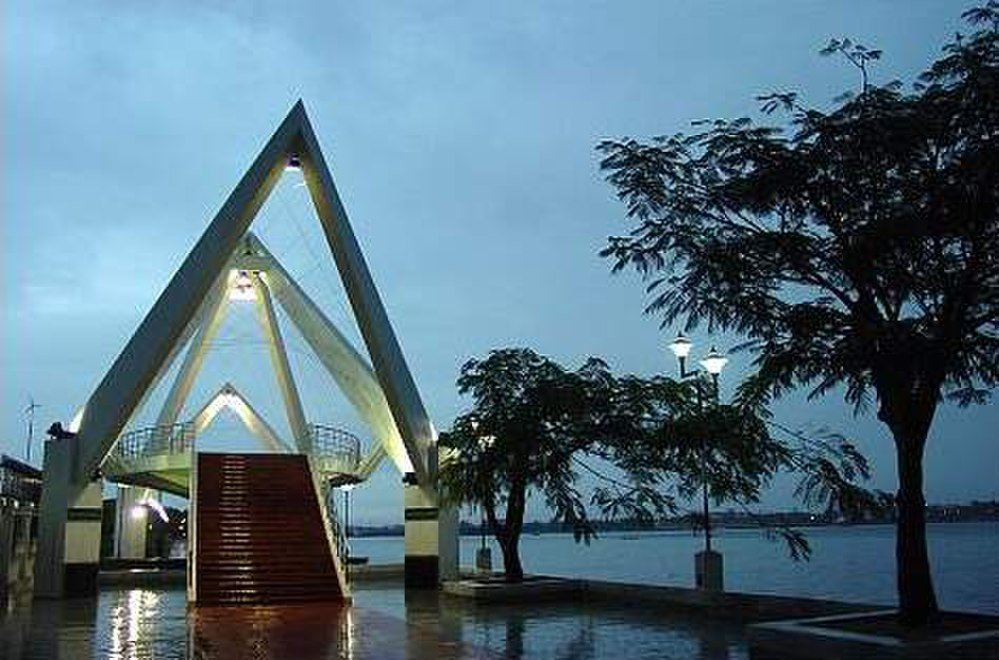

PLACES TO VISIT IN ERNAKULAM
Marine Drive

A popular hangout among Kochiites, Marine drive is the perfect place for an evening stroll. A walkway by the backwaters it is lined by beautiful Gulmohar trees and benches on either side. There are two bridges on each end of the walkway; one, in the shape of a rainbow and the other, shaped as a boat. Conducted boat tours take tourists to places of interest. One can also opt for small canoes. Restaurants, cafes, and vendors selling peanuts and bhajjis make it a perfect haunt for the young crowd. Bay Pride Mall, a posh shopping complex nearby, with a barista and restaurant is an added attraction.
Shiva Temple
Known as the Ernakulathappan Temple, the God of this temple is named after the city (Ernakulam). The deity Shiva, faces the west towards the sea which is a rarity. The idols of Lord Shiva and Parvathi found in the temple are believed to be self created. The Arattu procession where the deity is taken for a ritual bath in the temple pond marks the end of the eight day festival during the months of January and February.
Hill Palace Museum, Tripunithura
The palace on a hill-top was built in 1865 and was the residence of the Raja of Cochin. The largest archeological museum of Kerala it is set up in 52 acres of land and has 49 buildings. Exhibits displayed in its 18 galleries include the royal throne and other antique furniture, precious jewellery used by the kings and queens, royal chariots, palanquins, royal clothes, earthen, brass and bronze vessels, gold coins, and swords and spears. There is a special section for jewellery exhibits where the huge royal gold crown studded with precious stones is put on display. The palace grounds have a deer park, children’s park, heritage museum, archeological museum and a Mulla Panthal (jasmine grove) where the royal family used to take a stroll. The palace is open to the public on all days except Mondays.
Museum of Kerala History

10 kms from the city this museum at Edappally was the brainchild of industrialist and philanthropist, R Madhavan Nair. The sculptures in the museum depict the history of Kerala through the Neolithic Age to the Modern age. The one hour light and sound show depicts Kerala’s journey through the past to the present day. There is a gallery of contemporary and miniature paintings holding over 200 pieces of art.
Bolghatty Palace
The palace situated in an area of 15 acres was built by the Dutch in 1744. The palace is now a heritage hotel with lush green lawns surrounding it. It also has a golf course. Boats to this island start from the High Court Jetty. Country boats (Machuvas) can also be hired near the Jetty.
St Francis Church
It is India’s first European church built in 1503 by a group of Portuguese. The Portuguese explorer Vasco Da Gama was buried here in 1524. 14 years later his remains were taken back to Lisbon, however, his tombstone remains intact. Regular services are conducted on all days of the week in English and Malayalam at the church.
Willingdon Island
Named after the viceroy of India, Lord Willingdon, this 775 acre island was created from the soil dredged up while deepening Kochi’s Harbour in 1928. This engineering feat was led by Sir Robert Bristow. The island lies between mainland Ernakulam and Mattancherry. the island houses the Cochin Port Trust and the headquarters of the Southern Naval Command. Luxury hotels such as the Taj Malabar, the Trident Hilton and Casino Hotel are also built on the island.
Jew Street
The Jew Street in Fort Cochin is a quaint little street with curio shops that have an array of antiques in wood, brass and bronze. The shops have antiquities from all over the country. The street turned a shopping hub after the Jews living here returned to Israel. Their dwellings fell into disrepair and these structures were torn down to build new ones. Whatever was retrieved- woodwork, furniture, artefacts, vessels and brass work, fund their way into shops that sprang up in the alleys.
Kumbalangi
The first eco-friendly tourist village in India, Kumbalngi has numerous home stay options. It is a tiny village facing the backwaters in the western part of Cochin. Kalagramam, the artists’ village is a major attraction.